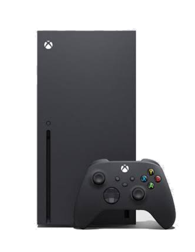

Xbox Series X

Стационарная консоль Microsoft девятого поколения.
История
Nintendo начала продумывать новое устройство ещё в 2012-м — сразу после релиза Wii U. Компании хотелось представить нечто особенное и дать геймерам новый игровой опыт, а не просто сделать наследницу прошлых консолей.<\br>В итоге компания придумала Switch — консоль, которую можно использовать и у телевизора, и в портативном режиме. Nintendo хотела, чтобы устройством пользовались как восточные геймеры, привыкшие играть с друзьями, так и западные игроки, предпочитающие проводить время за консолью в одиночку.
Уилл Таттл — Xbox Wire на русском.
Характеристики
- Производитель
- Microsoft
- Тип
- Стационарная консоль
- Поколение
- 9-е
- Год выпуска
- 2020
- Тип носителя
- Blu-ray
- Стартовая цена в США (2020)
- 499 $
- Цена в долларах 2025 года
- ≈ 621 $